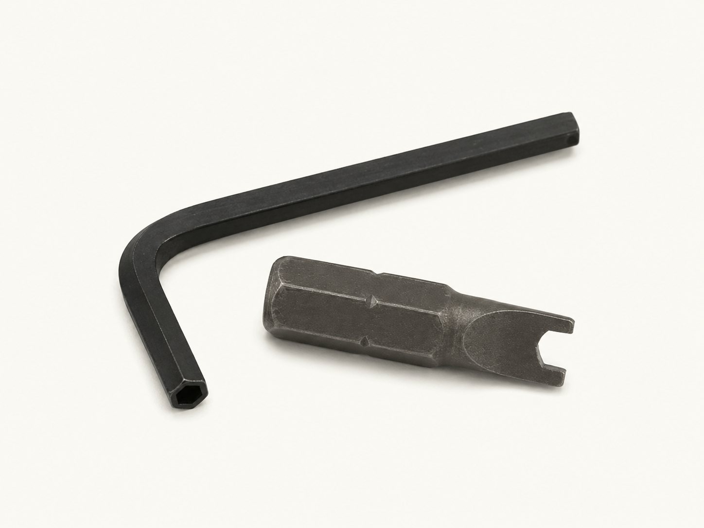

Security Driver Bits & Keys
Security insert bits and short-arm L-keys for matching tamper-resistant drives. Find the drive size, part number, and bit shank below; choose the drive pattern as well as the size.

Sizes & part numbers
Select a part number to start a quote. Catalog listings are reference configurations; availability is confirmed with your inquiry.
Pin-in 6-lobe insert bits (13)
| Part number | Drive size | Shank |
|---|---|---|
| TT07 | T-7 | 1/4" |
| TT08 | T-8 | 1/4" |
| TT09 | T-9 | 1/4" |
| TT10 | T-10 | 1/4" |
| TT15 | T-15 | 1/4" |
| TT20 | T-20 | 1/4" |
| TT25 | T-25 | 1/4" |
| TT27 | T-27 | 1/4" |
| TT30 | T-30 | 1/4" |
| TT40 | T-40 | 1/4" |
| TTL45 | T-45 | 5/16" |
| TTL50 | T-50 | 5/16" |
| TTL55 | T-55 | 5/16" |
Source: Screw & Supply catalog, page 8. Confirm current availability and exact configuration when ordering.
Two-hole spanner bits (6)
| Part number | Spanner size | Shank |
|---|---|---|
| 1/4SP04 | #4 | 1/4" |
| 1/4SP06 | #6 | 1/4" |
| 1/4SP08 | #8 | 1/4" |
| 1/4SP10 | #10 | 1/4" |
| 1/4SP12 | #12 | 1/4" |
| 1/4SP14 | #14 | 1/4" |
Source: Screw & Supply catalog, page 8. Confirm current availability and exact configuration when ordering.
Pin-in hex insert bits (8)
| Part number | Drive size | Shank |
|---|---|---|
| THB3/32 | 3/32" | 1/4" |
| THB1/8 | 1/8" | 1/4" |
| THB9/64 | 9/64" | 1/4" |
| THB5/32 | 5/32" | 1/4" |
| THB3/16 | 3/16" | 1/4" |
| THB7/32 | 7/32" | 1/4" |
| THB1/4 | 1/4" | 1/4" |
| THB5/16 | 5/16" | 1/4" |
Source: Screw & Supply catalog, page 8. Confirm current availability and exact configuration when ordering.
Tri-Wing bits (7)
| Part number | Drive size | For screw sizes | Shank |
|---|---|---|---|
| TWD0 | #0 | #1 | 1/4" |
| TWD1 | #1 | #2 | 1/4" |
| TWD2 | #2 | #4 | 1/4" |
| TWD3 | #3 | #6 | 1/4" |
| TWD4 | #4 | #8 | 1/4" |
| TWD5 | #5 | #10 | 1/4" |
| TWD6 | #6 | #12, #14 | 1/4" |
Source: Screw & Supply catalog, page 8. Confirm current availability and exact configuration when ordering.
Security Phillips bits (2)
Source: Screw & Supply catalog, page 8. Confirm current availability and exact configuration when ordering.
Pin-in hex short-arm L-keys (9)
| Part number | Drive size |
|---|---|
| THK3/32 | 3/32" |
| THK7/64 | 7/64" |
| THK1/8 | 1/8" |
| THK9/64 | 9/64" |
| THK5/32 | 5/32" |
| THK3/16 | 3/16" |
| THK7/32 | 7/32" |
| THK1/4 | 1/4" |
| THK5/16 | 5/16" |
Source: Screw & Supply catalog, page 9. Confirm current availability and exact configuration when ordering.
Pin-in 6-lobe short-arm L-keys (13)
| Part number | Drive size |
|---|---|
| KTT07 | T-7 |
| KTT08 | T-8 |
| KTT09 | T-9 |
| KTT10 | T-10 |
| KTT15 | T-15 |
| KTT20 | T-20 |
| KTT25 | T-25 |
| KTT27 | T-27 |
| KTT30 | T-30 |
| KTT40 | T-40 |
| KTT45 | T-45 |
| KTT50 | T-50 |
| KTT55 | T-55 |
Source: Screw & Supply catalog, page 9. Confirm current availability and exact configuration when ordering.
Common questions
- Will an ordinary bit fit a pin-in security screw?
- A pin-in drive needs a matching hollow-tip bit or key that clears the center pin. Both the drive pattern and size must match.
- What is the difference between an insert bit and an L-key?
- An insert bit fits a compatible holder or driver. An L-key is a self-contained hand tool for manual installation and service.
- Do all the insert bits have a 1/4-inch shank?
- No. The catalog lists T45, T50, and T55 6-lobe insert bits with a 5/16-inch shank. Check the shank column and your holder before ordering.
- How do I identify an unknown tool?
- Send a clear photo, the fastener part number or dimensions, and any reach restrictions. Screw diameter alone may not identify the drive size.
- What should I send for pricing or a tool set?
- Include part numbers or drive patterns and sizes, quantities, and whether you need insert bits, keys, or handles. We can review replacement-tool and set requirements.
Match the tool to the security drive
Pin-In 6-Lobe →
The matching security bit uses a center opening to clear the pin while engaging the six-lobe recess.
Pin-In Hex →
The matching bit or key uses a center opening to clear the pin while engaging the hex socket.
Two-Hole Spanner →
The matching bit uses two pins or prongs aligned with the holes in the fastener head.
Tri-Groove screws and nuts use external Tri-Groove sockets →, not conventional insert bits or L-keys. One-way screws → have separate installation and removal considerations. See the complete Drive Guide → for a full comparison.
Where matching security tooling is needed
- Field Service & MRO →
Supports field-service kits and MRO tool cribs for technicians and maintenance crews.
- Machinery Guarding & Panels →
Services guards and access panels secured with pin-in drives.
- Electronics & Electrical Enclosures →
Supports authorized service on electrical enclosures.
- Detention & Institutional →
Services institutional hardware requiring controlled access.
- Transit, Rail & Signage →
Supports installation and service of transit fixtures.
- Utility & Infrastructure →
Services utility equipment secured with matching security drives.